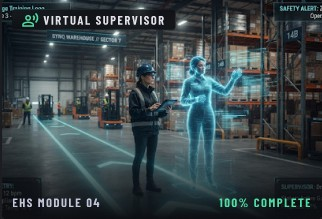
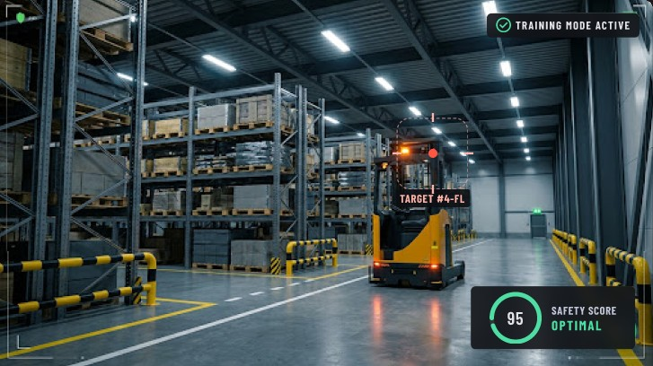
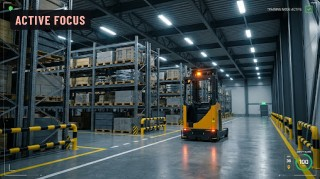
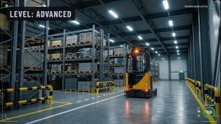
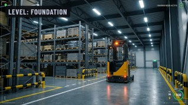
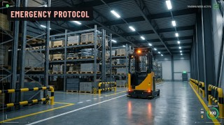
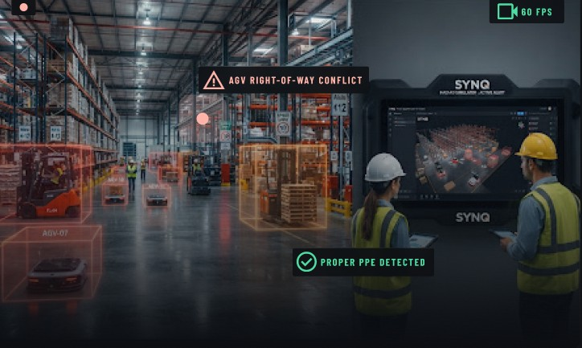
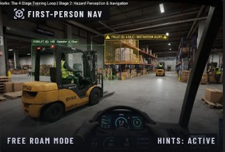
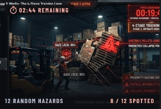
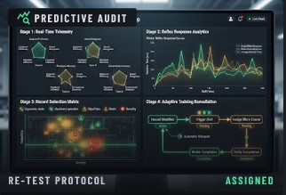

01Guided onboard
Train

- High-risk corridor route mapping
- Forklift clearance & blindspot drills
- Dynamic PPE compliance scan
Learn. Test. Improve.
Build instinctive safety reflexes with immersive 3D simulation.

High-frequency industrial failure scenarios with live physics inspection.

Blind corner maneuvers & vehicle right-of-way.

Unstable pallets & falling hazard identification.

Low-visibility slick zones & chemical SDS protocol.

Egress pathways & rapid emergency evacuation.
Bridge classroom theory with real-world warehouse simulation.

SYNQ’s progressive stress-conditioning cycle transforms raw workplace safety compliance from static classroom checklists into fast, reflexive operational muscle memory.




Difficulty increases as the player moves from personal equipment to environmental awareness and emergency response.
Learn the 7 PPE items and when to wear them.
Spot and report five hazard areas around you.
Respond to electrical and fire emergencies and evacuate safely.
Equip your safety officers with continuous 3D telemetry and transform reactive compliance training into an unshakeable culture of prevention.
Cross disciplinary engineers, simulation architects, and safety communication specialists driving zero-harm readiness across modern logistics footprints.
Directing platform lifecycle, enterprise systems engineering, WebGL simulation architecture, and ISO 45001 compliance standards. Synchronizing computational simulation with operational plant constraints.
Spearheading operational execution, intuitive operator interfaces, ergonomic safety communication protocols, and interactive feedback loops to eliminate reaction lag during critical plant incidents.
Constructing high-bay warehouse environment reconstructions, dynamic asset spatial physics, lighting pipelines, and hazard vector rendering for true-to-scale physical collision authenticity.
Synthesizing acoustic spatial cues, industrial audio designs, exhaustive scenario test verifications, QA stress-testing regimes, and rigorous compliance documentation for enterprise safety certification.